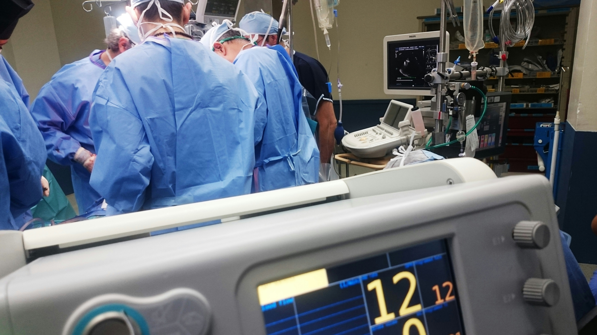

Ratkaisut
Asiakashallinta
Asiakashallinta yhdessä järjestelmässä
Yhtenäinen potilastietojen hallinta
Reaaliaikainen tieto kaikille käyttäjäryhmille
Turvallinen tiedonkulku hoitopolun eri vaiheissa
Asiakashallinta
Toimenpidesuunnitelma
Ajananto ja salisuunnittelu
Aikataulunäkymät
